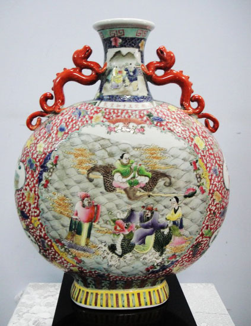

Thêm một bài viết mình chia sẻ về cổ vật gốm sứ , bản thân mình chủ yếu sưu tầm bên mảng đồ gỗ cổ nên về gốm sứ mình cũng chưa hiểu rõ tưởng tận được .
Thêm một bài viết mình chia sẻ về cổ vật gốm sứ , bản thân mình chủ yếu sưu tầm bên mảng đồ gỗ cổ nên về gốm sứ mình cũng chưa hiểu rõ tưởng tận được . Chính vì thế mình viết bài này với mong muốn nhận thêm được những ý kiến đóng góp của mọi người , và chia sẻ những kiến thức , kinh nghiệm mà mình có được trong những năm tháng buôn ba tứ xứ .
Với những người chơi đồ lâu năm thì chỉ cần nhìn nước men, cốt dáng , màu mực, nét vẽ là có thể phân biệt được nhưng với những người chưa có kinh nghiệm thì mình xin chia sẻ mấy cách của mình dưới đây.
Đặc biệt để ý dưới đây : Thường thì chúng ta muốn xem 1 món đồ cổ thì lật đít lên xem thật kỹ, sau đó chủ quan khẳng định 99% là cổ xưa. Vịn vào sự chủ quan này mà bọn giả mạo rất thích dùng kỹ thuật cũ-thân mới bất cứ khi nào có thể. Nhất là những món đồ có hiệu đề nổi tiếng, đồ lành quá ít, trong khi những món bể nát chỉ còn trơ đáy thì không đáng tiền. Vì thế phải xem thật kỹ đấy.
Đối với ấm chén , lậm lai , đĩa hay đồ nhỏ thì trong quá trình sử dụng có thể đáy nhẵn và ngả màu vàng nhạt đi phần nào – nhưng nhẵn quá thì bạn lên lưu tâm vì có thể có sự tác động xấu của con người. Đối với những đôi lộc bình hay đồ lớn thì đáy thường không nhẵn lắm vì những món đồ ít xê dịch.
Lưu ý : Phần tiếp giáp giữa đáy và thân phải có sự ngả màu từ từ chứ không thể đáy thì già câng , ngả màu còn thân thì men bóng sáng được .
Việc ngày càng nhiều con tàu đắm được phát hiện và những cổ vật của nó ngày càng có giá trên thị trường, khiến nhiều người tin rằng hễ có hào bám, rong rêu, trầm tích bám trên hiện vật thì đảm bảo rằng chúng là đồ cổ đã nằm sâu dưới biển hàng mấy trăm năm về trước.
Sự thật là bọn giả cổ chỉ cần ngâm đồ mới xuống dưới biển, dưới ao hồ, bùn lầy khoảng vài tháng là khi vớt lên thì đã đầy những trầm tích, hào bám khá chắc. Cho nên chúng ta đừng quan trọng việc có trầm tích , có vết hào bám bên ngoài hay không, mà cần xem bản thân hiện vật .
Đối với đồ giả kiểu này thì chúng ta phải soi thật kĩ phần trong lòng ( bình lọ) , cạnh khuất , cạnh trong của món đồ và khu đáy không tráng men cũng sẽ bị ảnh hưởng ăn mòn bởi axít. Mà điều này thì không thể đồi với cổ vật tự nhiên. vì dùng tự nhiên thì các phần đó rất ít bị tác động , Ngoài ra chúng ta cũng có thể nhận biết đồ đã ngâm qua axít bằng cách…ngửi chúng !